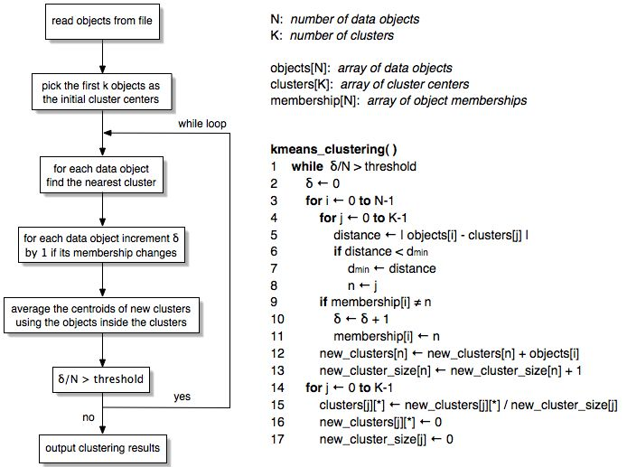
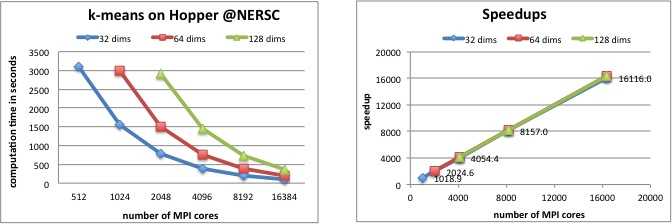

Parallel K-Means Data Clustering
This software package
of parallel K-means data clustering contains the followings:
- A parallel implementation using
OpenMP and C
- A parallel implementation using
MPI and C
- A sequential version in C
Algorithm:

- The above sequential algorithm is based on the paper by
MacQueen, J. "Some Methods for Classification and Analysis of
Multivariate Observations." In the 5th Berkeley Symposium on
Mathematical Statistics and Probability, 1967.
- The parallel implementation uses data parallelism. Data objects
to be clustered are evenly partitioned among all processes while the
cluster centers are replicated. Global-sum reduction for all cluster
centers is performed at the end of each iteration in order to
generate the new cluster centers.
To compile:
Although I used Intel C compiler, icc, version 7.1 during the code development,
there is no particular features required except for OpenMP. Thus, the
implementation should be fairly portable. Please modify
Makefile
to change the compiler if needed.
- Make command for the sequential version: make seq_main
- Make command for the MPI version: make mpi_main
- Make command for the OpenMP version: make omp_main
To run:
- The Makefile will produce executables
- "omp_main" for OpenMP version
- "mpi_main" for MPI version
- "seq_main" for sequential version
- The list of available command-line arguments can be obtained by running -h option
Input file format:
The executables read an input file that stores the data points to be clustered.
A few example files are provided in the sub-directory
./Image_data.
The input files can be in two formats: ASCII text and raw binary.
- ASCII text format:
- Each line contains the coordinates of a single data point
- The number of coordinates must be equal for all data points
- Example files: color100.txt, texture100.txt, and edge100.txt
- Raw binary format:
- File header contains two 4-byte integers.
- The first 4-byte integer is the number of data points.
- The second integer is the number of coordinates for each data point.
- The rest of the file (file body) contains the coordinates of
all data points and each coordinate is a 4-byte floating point of type float.
- There are three example files (in little Endian format) provided:
color17695.bin, edge17695.bin, and texture17695.bin. They
each contains 17695 data points.
- Note: The first K elements of the input data are picked as the
initial K cluster center coordinates.
Output files:
There are two output files:
- Coordinates of cluster centers
- The file name is the input file name appended with
".cluster_centres".
- The default is in ASCII text format.
- Each line contains an integer indicating the cluster id and the
coordinates of the cluster center.
- Binary format can be enabled by using -r option.
- Header: the first 4-byte integer is the number of clusters and the
second 4-byte integer is the number of coordinates of the
cluster center.
- Body: the coordinates of all cluster centers.
- Membership of all data points to the clusters
- The file name is the input file name appended with
".membership".
- The default is in ASCII text format.
- Each line contains two integers: data point index (from 0
to the number of points) and the cluster id indicating the
membership of the point.
- Binary format can be enabled by using -r option.
- Header: a 4-byte integer for the number of data points.
- Body: the list of cluster IDs (4-byte integers),
corresponding to each data point.
Performance results:

-
Performance results on Hopper, the Cray XE6 at NERSC, 2011.
Hopper has 153,216 processors cores (6,384 compute nodes made up of 2 twelve-core AMD MagnyCours 2.1 GHz processors).
The input data contains 1 billion data points and each data point is a vector of 128 dimensions.
Limitations:
- Data type -- This implementation uses C float data type for all coordinates
and other real numbers.
- Large number of data points -- The number of data points cannot exceed 2G due
to the 4-byte integers used in the programs. (But do let me know if it is
desired.)
Derived Work:
Related Links:
Wei-keng Liao
Electrical Engineering and Computer Science Department
Northwestern University
Please send comments to
Software available since Sep. 17, 2005.
Page last modified date: Oct. 6, 2009.